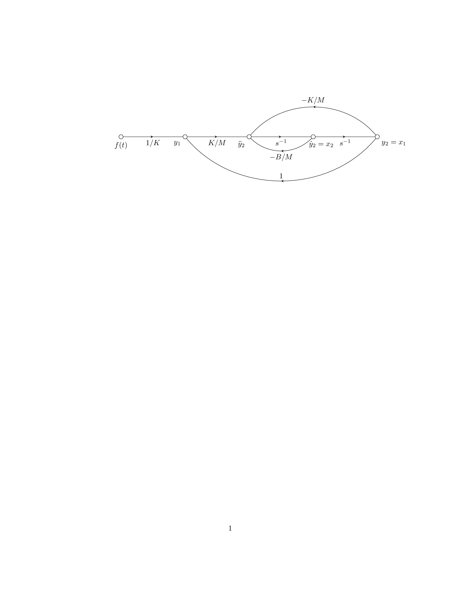

\documentclass{article}
\usepackage{tikz}
\usetikzlibrary{decorations.markings}
\newif\iflabrev
\begin{document}
\begin{tikzpicture}
[
label revd/.is if=labrev,
%label revd/.default=true,
amark/.style={
decoration={
markings,
mark=at position {0.5} with {
\arrow{stealth},
\iflabrev \node[above] {#1};\else \node[below] {#1};\fi
}
},
postaction={decorate}
},
terminal/.style 2 args={draw,circle,inner sep=2pt,label={#1:#2}},
]
%Place the nodes
\node[terminal={below}{$f(t)$}] (a) at (0,0) {};
\node[terminal={below left}{$y_1$}] (b) at (3cm,0) {};
\node[terminal={below left}{$\ddot{y}_2$}] (c) at (6cm,0) {};
\node[terminal={[xshift=-4mm]below right}{$\dot{y}_2=x_2$}] (d) at (9cm,0) {};
\node[terminal={below right}{$y_2=x_1$}] (e) at (12cm,0) {};
%Draw the connections
\draw[amark=$1/K$] (a) to (b);
\draw[amark=$K/M$] (b) to (c);
\draw[amark=$s^{-1}$] (c) to (d);
\draw[amark=$s^{-1}$] (d) to (e);
\draw[amark=$-B/M$] (d) to[bend left=45] (c);
\draw[amark=$1$,label revd] (e) to[bend left=50] (b);
\draw[amark=$-K/M$,label revd] (e) to[bend right=50] (c);
\end{tikzpicture}
\end{document}Created by David Li